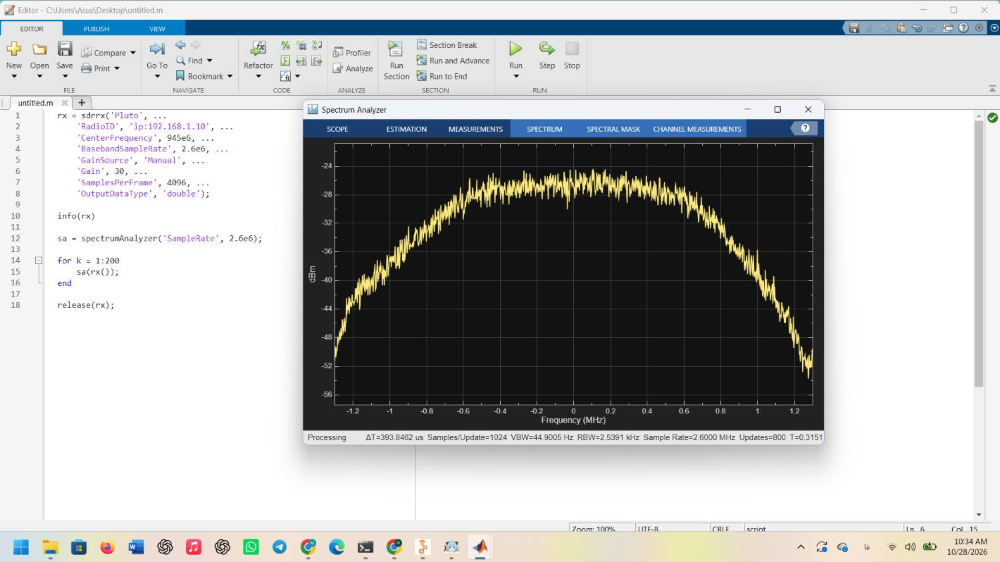

گزارش آزمایش ۰: راهاندازی محیط و نصب نرمافزارها
- lab00_report.pdfنسخهی کامل گزارش (LaTeX)
- lab00_report_tex.zipفایلهای منبع LaTeX و تصاویر
۱. هدف و خلاصهی نتایج
هدف، برپا کردن محیط نرمافزاری درس روی لپتاپهای تیم و آزمودن هر مسیر با اتصال واقعی به دستگاه ADALM-Pluto از راه نشانی ip:192.168.1.10 بود.
| مسیر | ابزار | خروجی آزمون | وضعیت |
|---|---|---|---|
| شبکه | کارت شبکهی سیمی | ping 192.168.1.10 | انجام شد |
| الف | MATLAB و بستهی پلوتو | شناسایی از راه شبکه و طیف GSM900 | انجام شد (لپتاپ ۲) |
| ب | Radioconda، GNU Radio و نرمافزارهای آماده | فلوگراف و دو نرمافزار آماده | نصب و پیکربندی کامل |
| ج | اوبونتو در کنار ویندوز | iio_info و GRC | در برنامهی تکمیل |
| د | VS Code، پایتون، pyadi-iio | گرفتن نمونههای I/Q | نصب کامل؛ اسکریپت آماده |
۲. تنظیم کارت شبکه
کارت سیمی با نشانی ثابت 192.168.1.20 و ماسک 255.255.255.0 تنظیم شد؛ دروازه و DNS خالی ماندند. دو نشانی در یک زیرشبکهاند:
آزمون ping چهار پاسخ با زمان کمتر از یک میلیثانیه و اتلاف صفر درصد داد.
۳. مسیر الف: MATLAB
اسکریپت آزمون دستورکار روی لپتاپ ۲ (لپتاپ مبین جلودار، عضو تیم در جلسهی صفر؛ ترکیب تیم پس از این جلسه تغییر کرد) با بهرهی ۳۰ دسیبل اجرا شد و طیف در ۹۴۵ مگاهرتز با نرخ ۲٫۶ مگانمونه بر ثانیه دریافت شد.

اعداد نوار وضعیت نمایشگر با نظریه یکیاند:
در این فرکانس حاملهای باریک GSM دیده نشد. طیف در حدود $\pm 0.6$ مگاهرتز تقریباً تخت است و تا لبهها حدود ۲۴ دسیبل افت میکند. برداشت ما این است که ۹۴۵ مگاهرتز درون یک سیگنال پهنباند قرار دارد (در آزمایش ۱ بلوکی حدود ۴٫۴ مگاهرتزی بین ۹۴۲ و ۹۴۶٫۴ دیدیم) و افت دو طرف پاسخ فیلترهای گیرنده است.
دستگاه با iio_attr -C (در آغاز جلسهی ۱) شناسایی شد: مدل سازگار با پلوتو PUZHI PZSDR P201PRO با تراشهی AD9361، سفتافزار 3669-dirty و بازهی گیرندهی ۷۰ مگاهرتز تا ۶ گیگاهرتز. شمارهی سریال از info(rx) در برنامهی تکمیل ثبت میشود.
۴. مسیر ب: Radioconda و GNU Radio
- GNU Radio 3.10.12.0 با بلوکهای gr-iio روی لپتاپ ۱ نصب شد. اتصال GRC به دستگاه در آغاز جلسهی ۱ با فلوگراف پایش تأیید شد.
- SDR++ v1.3.2: دستگاه فقط از راه USB و پس از نصب درایور پلوتو شناخته شد. تصویر طیف در برنامهی تکمیل ثبت میشود.
- SDRangel 8.0.0: نصب و با آرگومان
uri=ip:192.168.1.10پیکربندی شد؛ دستگاه با جستوجوی خودکار پیدا نشد.
۵. مسیر د: پایتون و pyadi-iio
محیط پایتون Radioconda (base, Python 3.12.9) با pyadi-iio 0.0.19 از پیش آماده بود و در VS Code بهعنوان مفسر انتخاب شد. خط چاپ اسکریپت دستورکار پرانتز وارونه داشت و اصلاح شد:
print("samples:", x.shape, " sample_rate:", sdr.sample_rate)اسکریپت pluto_test.py:
import adi, numpy as np, matplotlib.pyplot as plt
sdr = adi.Pluto("ip:192.168.1.10")
sdr.sample_rate = int(2.6e6)
sdr.rx_lo = int(945e6)
sdr.rx_rf_bandwidth = int(2e6)
sdr.gain_control_mode_chan0 = "manual"
sdr.rx_hardwaregain_chan0 = 20
sdr.rx_buffer_size = 4096
x = sdr.rx()
print("samples:", x.shape, " sample_rate:", sdr.sample_rate)
X = np.fft.fftshift(np.fft.fft(x * np.hanning(len(x))))
f = (sdr.rx_lo + np.fft.fftshift(np.fft.fftfreq(len(x), 1/sdr.sample_rate))) / 1e6
plt.plot(f, 20*np.log10(np.abs(X) + 1e-9))
plt.xlabel("frequency (MHz)"); plt.ylabel("dB"); plt.grid(True); plt.show()خروجی مورد انتظار: samples: (4096,) sample_rate: 2600000؛ ثبت خروجی و نمودار در برنامهی تکمیل.
۶. مسیر ج: اوبونتو
نصب اوبونتو پارتیشنبندی دیسک را تغییر میدهد و پیش از آن پشتیبانگیری کامل لازم است؛ این مسیر طبق برنامهی تکمیل، بیرون از جلسه انجام میشود. اجرای آزمایشها روی ویندوز با Radioconda به آن وابسته نیست.
برنامهی تکمیل
| بند | کار | موعد |
|---|---|---|
| مسیر د | اجرای pluto_test.py با دستگاه و ثبت خروجی و نمودار | جلسهی ۲ (۲۰ آبان) |
| مسیر الف | ثبت شمارهی سریال از info(rx) | جلسهی ۲ (۲۰ آبان) |
| مسیر ب | تصویر طیف در SDR++ و آزمون SATSAGEN | جلسهی ۲ (۲۰ آبان) |
| مسیر ج | نصب اوبونتو و آزمون iio_info و GRC | تا ۲۰ آبان |
۷. عیبیابی
| نشانه | علت | راهحل |
|---|---|---|
| پیوند Radioconda به صفحهای دیگر منتقل شد | مخزن به radioconda/radioconda-installer منتقل شده | نصبکننده از بخش Download صفحهی جدید گرفته شد |
| زیپ کد منبع بهجای برنامهی نصبی دانلود شد | دکمهی Code و فایلهای Source code کد منبعاند | فایلهای آماده از بخش Releases گرفته شد |
gnuradio-companion شناخته نشد | خط فرمان معمولی ویندوز، بدون محیط کاندا | اجرا از میانبر منو یا radioconda Prompt |
| خطای نحوی در اسکریپت پایتون | پرانتز وارونه در خط چاپ | خط چاپ اصلاح شد |
| SDR++ پلوتو را پیدا نکرد | نبود خانهی نشانی دستی شبکه در این نسخه | نصب درایور USB پلوتو |
| SDR++ فقط صدای نویز داشت | فرکانس بهاشتباه ۱۱۹٫۱ گیگاهرتز وارد شده بود | ورود دوازدهرقمی فرکانس |
| SDRangel پلوتو را نشناخت | جستوجوی خودکار ناموفق | ردیف دستی امتحان شد؛ حل نشد |
| نصب بستهی پشتیبانی MATLAB | دسترسی محدود به حساب MathWorks | انجام روی لپتاپ ۲ |
۸. ایمنی
فقط دریافت انجام شد و آنتن تنها روی RX1 بود. در یکی از تصاویر SDR++ بهره روی ۶۰ دسیبل دیده میشود که از سقف ۳۰ دسیبل با آنتن بیشتر است؛ از این پس پیش از هر اجرا بهره را چک میکنیم.
۹. استفاده از هوش مصنوعی
از دستیار هوش مصنوعی Claude برای راهنمایی نصب، رفع خطاها و نگارش و قالببندی گزارش استفاده شد. دادهها و مشاهدهها از اجرای خود تیم است.
داوری همتا